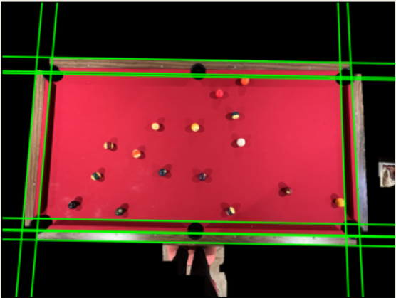
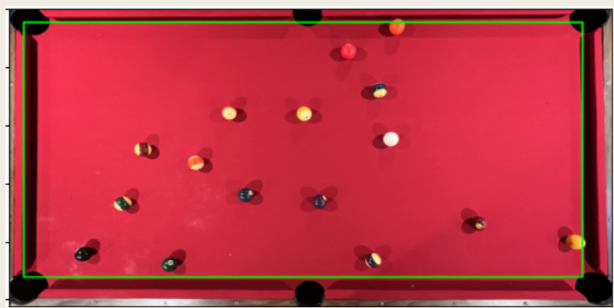
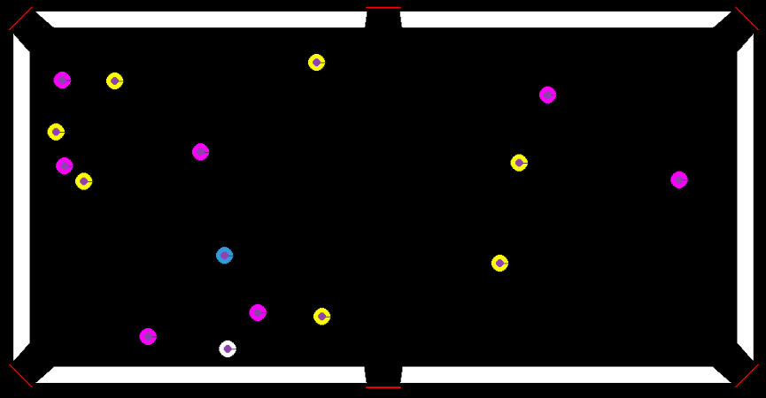
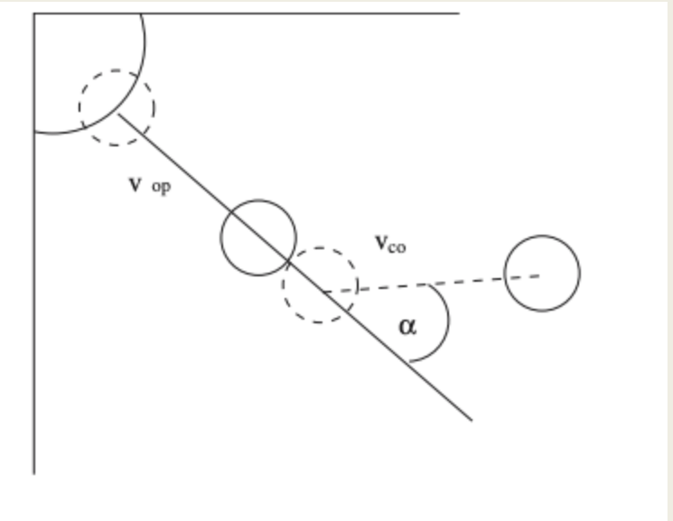

Pool Ball Detection and Shot Recommendation, a CS766 final project at the University of Wisconsin - Madison.
Team Members: Ben Nibbelink, Mick Ohtake, Scott Sala
Motivation
Billiards is a sport that is enjoyed by millions of people around the world. Besides pure mechanical and physical skill with a cue, one of the main keys to success that separates the elite from the casual player is the ability to identify an optimal shot sequence. This optimal shot sequence is what we tried to identify through our projet. We decided on this topic because we thought that it was a fun and relevant, although challenging as well.

Rhoncus Semper

Magna Nullam

Natoque Vitae

Dolor Penatibus

Orci Convallis
Approach
Our approach revolved around 5 key components
1. Identify Table Layout from an Image 2. Identify Balls on Table from the Same Image 3. Create a Virtual Game Table 4. Add Balls to the Virtual Table 5. Simulate Various Shots and Identify Optimal Shot SequenceImplementation - Vision
Table Layout
Our first approach to identifying the table layout involved attempting to use Hough Lines to identify the walls of the table. Here are the results of that attempt.
 As you can see, the shadows in our images made the wall detectiong difficult to do,
even with various attempts at parameter tuning. Because of this we, decided to go with an
alternative approach. The process was:
1. Mask the image using a histogram (and some morphological processing) to extract mainly just the pool table
2. Apply a circle Hough transform to find circles the size of pockets
3. Find clusters of circles and take the top 4, these are the corner pockets
4. Find the centroid of each cluster and this is what we use as the corner
Here are the results of that implementation.
Once again, the results are not perfect, but much better than what we saw with the hough lines.
Ball Identification
The process for ball identification was as follows:
1. Apply a circle Hough Transform to find circles the size of balls
2. Apply a similar clustering technique.
3. Find the centroid of each cluster
However, we once again encountered a few issues with this method, which we will discuss later.
Here are the results from this approach.
Ball Labeling
The process for ball labeling was as follows:
1. Use a bounding circle for each ball found
2. Apply a 3D histogram of the pixel values in the bounding circle
Here are the results:
Implementation - Simluation
Creating the Game Table
For creating the actual game table, we used actual table size measurements to get the relative size of everything in pixels, including the balls, pocket mouths, throats, rail widths, and the table area. After that, we apply a homography from the input image into the game table, using the corner pockets as key points so that balls can be easily positioned. Here is a side by side of an image of the ball identification on the table, as well as the simulated table.
Simulating Gameplay
For simulated gameplay, the codebase mainly relied on pymunk and pygame libraries to run physics simulations and show us the results of these physics simulations. We used a branch and bound methodology to find the best shot sequence, bounded by a predefined "shot difficulty". Over the various strenghts and angles that we tested, there were around 2,750 to 11,500 simulations run per turn, with around 2,500+ turns evaluated. If the shot was legal and easy enough (defined by our shot difficulty), we add the resulting table state to a min heap and continue our search. We end once the heap was empty, and choose the sequence with the lowest overall difficulty.
Shot Diffulty
Our difficulty measure was defined as:
Diff = cos(a) / ( Vco * Vop) * Collision Factor
Vco: distance from cue to object
Vop: distance from object to pocket
**Note**:Collision factor is to account for increased difficulty of bank and combo shots
Results
We found pretty successful results for both the table ball identification, and the shot simulation.
Here is a result of the Shot Simulation for the Detected Balls and Table
Discussion
We encountered several difficulties througout the project, here is a discussion of a few of them.
Shot Evaluation
In terms of the shot evaluation, the main things that we thought were left unfinished were the speed of the search and the difficulty measurements. Because of the millions of table states created and evaluted, even with our branch and bound methodology, the process was still quite slow. This was OK in our case since we had enough time and compute power, but it would be interesting to see if our process could be run in real time to be much more useful to players in the moment. Some ideas that we came up with were to random sample shots instead of evaluation all shots, and to add some type of prioritization in our search tree. For our difficulty measure, we found that it worked fine in our case, but left out some key components that would translate to the real world. Particularly, combo and bank shots aren't really accounted for in our difficulty measure. Lastly, we are making a pretty large assumption that there is no rotational energy in our system. It would be interesting to include this, but would likely vastly increase our simulation time.
Vision
In the vision aspect, we found that our limitations were mostly due to image quality and associated lighting. Shadows that the balls and the walls produce impact our vision system greatly, which caused many of our hough transform attempts to be unsuccessful. As a result, we had to do quite a bit of optimization specific to the input image. Future work could include calculating some margin of error for each ball identification/labeling, perhaps by analyzing the variance of each cluster's centers. Addionally, we could optimize our ball identification with a CNN.